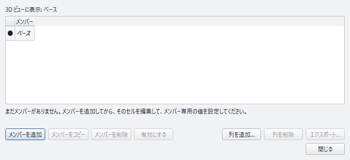
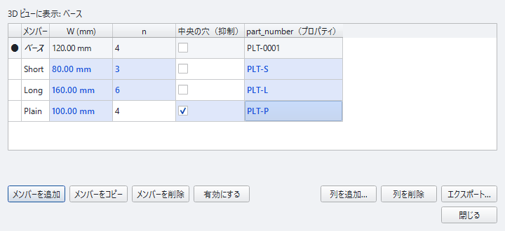
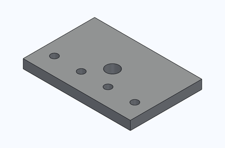
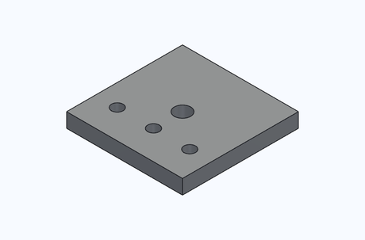
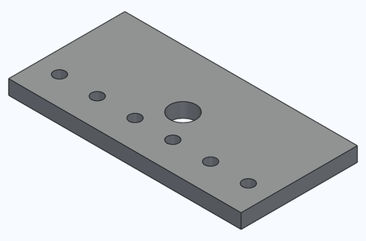
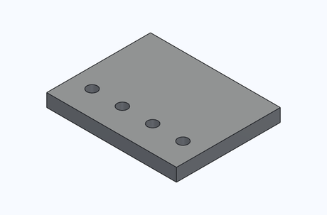
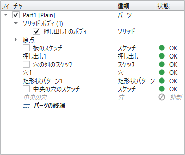
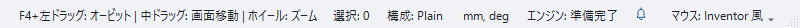
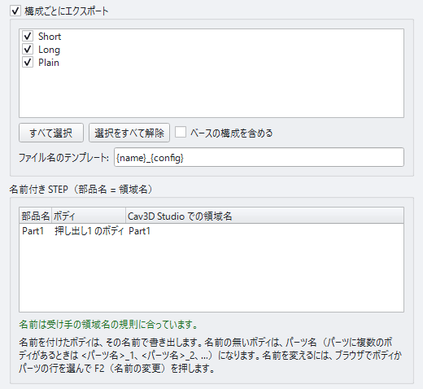

第 11 章
構成
この章では、1 つのパーツから、寸法や抑制の違うメンバーをいくつも作る機能（構成）を説明します。板の幅違いの 3 品種を 1 つのドキュメントで管理し、切り替えて確かめ、まとめて STEP に書き出せるようになります。Inventor の iPart の表に当たります。この章の写真は、samples/parametric_plate.mcad に 3 つのメンバーを作って撮りました。
11.1 構成の考え方
パーツには基本（ベース モデル）と、いくつかのメンバーがあります。メンバーは、基本との違いだけを持ちます。違いにできるのは、次の 3 つです。
| 違い | 例 |
|---|---|
| パラメータの値 | ユーザー パラメータ W を 160 mm に。パターンの個数 n を 6 に。スケッチの寸法やフィーチャの数値の欄も |
| フィーチャの抑制 | 中央の穴を抑制する |
| プロパティの値 | 部品番号 PLT-L（iProperties） |
違いのない値は、基本のものを使います。基本の寸法を変えると、メンバーにも反映されます（メンバーが上書きしている値を除く）。メンバーの形は、1 つのドキュメントの中に定義だけが入り、使うときに計算されます。
11.2 構成の表
リボンの［管理］タブ → ［構成］パネル → ［構成の表］をクリックします。
表のダイアログが開きます。最初は［ベース］の行だけです。

図 11-1 構成の表（メンバーを作る前）。［3D ビューに表示］の行に、今ビューに出ているメンバーが出ます。

表の行は、先頭が［ベース］（斜体。値は読み取り専用）、その下がメンバーです。列は次のとおりです。
左端の列の●は、今 3D ビューに出しているメンバーの印です。
［メンバー］の列に、メンバーの名前が出ます。
その右には、メンバーが違いを持つ項目の列が並びます。パラメータは名前と単位（［W (mm)］）、フィーチャの抑制はチェック（［中央の穴（抑制）］）、プロパティは名前（［part_number（プロパティ）］）です。
この表は、開いたまま、3D ビューとブラウザを操作できます（モードレスです）。表が開いているときに［構成の表］をもう一度押すと、開いている表が前に出ます。ドキュメントが変わったとき（Undo・Redo を含む）と、ビューに出すメンバーが変わったときは、表が読み直されます。
11.3 メンバーを作る
表の［メンバーを追加］を押します。
構成1という行ができます。必要な数だけ繰り返します。メンバー名のセルをダブルクリックして、名前（
Short・Long・Plain）を入力します。［列を追加］を押し、メニューから、違いを持たせたい項目を選びます。［パラメータ］（例: ［W (mm)］・［n］）・［抑制］（例: ［中央の穴（抑制）］）・［プロパティ］（例: ［part_number（プロパティ）］）のサブメニューにあります。
メンバーの行と列の交わるセルをダブルクリックして、値の式を入力し、Enter を押します。抑制の列は、チェックを入れます。

図 11-2 3 つのメンバーを作った表。青い太字のセルが、そのメンバーが上書きしている値です。 Plainは、中央の穴を抑制しています。

セルの式は、パラメータの式（第 10 章）と同じ書き方です。
WにH * 2のように、ほかのパラメータを使ってもかまいません。セルを空にして Enter を押すと、上書きが外れ、基本の値に戻ります。
式が誤っているとき（構文・単位の違い・知らない名前・
0 mmの寸法・型の違い）は、表の下に理由が出て、セルは元の値に戻ります。抑制のチェックを、基本の抑制と同じ値にすると、上書きが外れます。基本で抑制されているフィーチャを、メンバーで抑制しないときは、チェックを外します。
セルの編集は、1 回が 1 つの Undo の項目です。
| ボタン | 動き |
|---|---|
| ［メンバーを追加］ | メンバーを足します。名前は 構成1、構成2…です |
| ［メンバーをコピー］ | 選んだメンバーの上書きを写した、新しいメンバーを作ります |
| ［メンバーを削除］ | 選んだメンバーを消します（Ctrl+Z で戻せます）。今ビューに出しているメンバーを消すときは、先に基本に戻します |
| ［有効にする］ | 選んだ行を 3D ビューに出します（基本の行も選べます） |
| ［列を追加］ | まだ表に出ていない項目の列を足します。値を入れるまで、列は文書に保存されません |
| ［列を削除］ | 選んでいるセルの列を外し、その列の全メンバーの上書きを消します（メンバーごとに 1 つの Undo の項目） |
| ［エクスポート］ | 全メンバーを選んだ状態で、エクスポートのダイアログを開きます（一括でエクスポート） |
11.4 メンバーを切り替える
3D ビューに出すメンバーは、表で切り替えます。表は開いたままなので、切り替えるたびに、ビューの形を見て確かめられます。
メンバーの行を選び、［有効にする］を押します（左端の ● の列のダブルクリックでも同じです）。
ビューの形が、そのメンバーの形になります。
次の 4 枚は、同じ倍率で撮っています。板の幅の違いを比べられます。




Short。幅 80 mm・穴 3 つ。

Long。幅 160 mm・穴 6 つ。

Plain。幅 100 mm。中央の穴が無く、穴は 4 つです。基本でないメンバーを出している間は、ブラウザのパーツの行に
[Plain]のようにメンバー名が付き、抑制しているフィーチャは灰色の斜体になります。ステータスバーに、
構成: Plainのボタンが出ます。押すと、構成の表が開きます。基本に戻すと消えます。


[Plain] が付きます。

構成: Plain のボタン。切り替えは表示の変更で、Undo の項目になりません。ドキュメントは変わらず、スケッチも解き直しません。メンバーの形は、初めて出すときに、基本と違う部分だけを計算します。計算した形は覚えているので、2 回目からはすぐ切り替わります。
物理プロパティ・iProperties の質量・エクスポートも、今のメンバーの値で出ます（第 12 章）。
どのメンバーを出していたかは、ドキュメントに保存されます。
11.5 一括でエクスポートする
メンバーを 1 つずつ STEP などのファイルに書き出します。電磁場解析のスタディ（寸法違いのモデルの一括生成）に使います。
構成の表の［エクスポート］を押します。エクスポートのダイアログが開き、［構成ごとにエクスポート］にチェックが入って、全メンバーが選ばれています（リボンの［管理］タブ →［挿入］パネル →［エクスポート］から開いたときは、［構成ごとにエクスポート］に自分でチェックを入れます）。

図 11-9 エクスポートのダイアログの下の部分。［構成ごとにエクスポート］に、メンバーの一覧と［ファイル名のテンプレート］があります。その下の［名前付き STEP（部品名 = 領域名）］は、STEP に書く部品名です。 出力するメンバーのチェックを確かめます。［すべて選択］・［選択をすべて解除］で一度に変えられます。基本も書き出すときは、［ベースの構成を含める］にチェックを入れます。
［ファイル］に出力先（例
C:\work\plate.step）を入れ、［エクスポート］を押します。

メンバーごとにファイルができます。書き出しは別のプロセスで行うので、ウィンドウは止まりません。
| ファイル名のテンプレート | 出力先 plate.step のときのファイル名 |
|---|---|
{name}_{config}（既定） | plate_Short.step・plate_Long.step・plate_Plain.step。基本は plate_Base.step |
{config}-{name} | Short-plate.step・Long-plate.step… |
{name}は出力先のファイル名（拡張子を除く）、{config}はメンバーの名前です。ファイル名に使えない文字は_に直ります。テンプレートには
{name}と{config}だけを使えます。フォルダの区切り・:・そのほかの{}は断られます（「ファイル名のテンプレート … に使えるのは {name} と {config} だけです」）。2 つのメンバーが同じファイルになる名前も断られます。メンバーを 1 つだけ選んでファイルのパスを指定したときは、そのパスのまま書きます。
出力先に同じ名前のファイルがあるときは、上書きするかを 1 回だけ尋ねます。
メンバーごとの失敗は記録して、残りの書き出しを続けます。すべて成功したときだけ、完了の知らせが出ます。
export_manifest.json
2 つ以上のファイルを書くと、出力先のフォルダに export_manifest.json も書かれます（1 つのときは書きません）。ファイルごとの内容と、再現のための記録が入っています。次は、その一部（ファイル 1 つ分の主な項目）です。
{
"format": "mcad-export-manifest",
"document": {"path": "C:\\work\\plate.mcad", "rev": 15},
"export": {"format": "step", "options": {"schema": "AP214", "unit": "mm"}},
"name_template": "{name}_{config}",
"files": [
{
"path": "plate_Long.step",
"ok": true,
"configuration": {"id": "g40", "name": "Long"},
"overrides": {"parameters": {"W": "160 mm", "n": "6"},
"suppression": {}, "properties": {"part_number": "PLT-L"}},
"provenance": {"env_seed": "022f3e…", "tip_chain": "1b0e48…", "steps": {"cache": 7}},
"labels": [{"name": "Part1", "body": "f26#0", "solids": 1, "volume": 122470.79}],
"sha256": "0613c6…", "size": 50699
}
]
}| 項目 | 内容 |
|---|---|
configuration・overrides | メンバーの名前と、上書きしている値（パラメータ・抑制・プロパティ） |
provenance | 形を作った計算の記録（計算環境の識別子と、最後の形の識別子。計算したステップとキャッシュから使ったステップの数） |
labels | 書いた部品の名前（STEP の部品名）・ボディ・ソリッドの数・体積。部品名は、名前を付けたボディはその名前、名前の無いボディはパーツ名です（第 26 章） |
sha256・size | ファイルのハッシュと大きさ |
11.6 コマンドラインで書き出す
ウィンドウを使わずに、メンバーを書き出せます。ドキュメントは変わりません。
python -m mcad convert plate.mcad out.step --config Long
python -m mcad convert plate.mcad out.step --config Long --set W=140mm
python -m mcad convert plate.mcad out.step --all-configs--configにメンバーの名前（か ID）を指定します。繰り返して複数指定できます。省略すると、ドキュメントに保存した、表示中のメンバーです。2 つ以上のときは、out_Short.step・out_Long.stepのようにファイル名が付きます。--all-configsは、すべてのメンバーを書き出します。--set 名前=値は、この書き出しの間だけ、パラメータの値を替えます。同じパラメータをメンバーが上書きしていても、--setの値が優先されます。上の 2 行目では、LongのW = 160 mmでなく140 mmで書き出します。--name-templateでファイル名のテンプレート、--manifest/--no-manifestで manifest の有無を決めます。
すべてのオプションは第 28 章にあります。
11.7 できないこと
メンバーの並べ替え、表の列の並びの保存はありません。列は、上書きのある列と、ダイアログを開いている間に足した列が出ます。
配列の中の項目（リストの欄の 1 つ 1 つ）は、上書きできません。
構成を持つパーツのコピーと、アセンブリでの構成の選択は、まだありません。
iProperties のダイアログで、メンバーごとにプロパティを編集することはできません。表の［プロパティ］の列で行います。